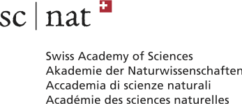
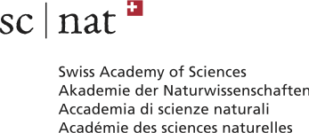
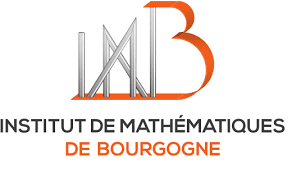
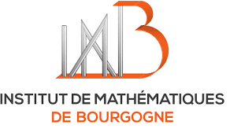
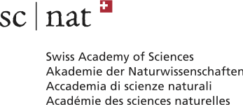
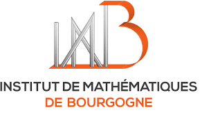
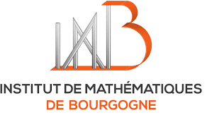

We gratefully acknowledge support from:
ANR FIBALGA
Institut de Mathématiques de Bourgogne
Swiss Academy of Sciences
Swiss doctoral program (cuso)
Swiss mathematical society
University of Basel
Université d'Angers


 

 

13 - 17 January 2020, in Charmey
(near Gruyères, Fribourg, Switzerland)
|
Cinzia Casagrande (University of Torino) |
Fano manifolds and birational geometry |
|
Pierre Le Boudec (University of Basel) |
The Hasse principle and random Fano hypersurfaces |
|
Bernd Sturmfels (University of California at Berkeley) |
Applications of Algebraic Geometry |
|
Monday January 13 |
Tuesday January 14 |
Wednesday January 15 |
Thursday January 16 |
Friday January 17 |
| 12h30 welcome |
breakfast 8h45-9h45 mini-course 1 10h15-11h15 mini-course 2 11h45-12h45 mini-course 3 |
breakfast 8h45-9h45 mini-course 1 10h15-11h15 mini-course 2 11h45-12h45 mini-course 3 |
breakfast 8h45-9h45 mini-course 1 10h15-11h15 mini-course 2 11h45-12h45 mini-course 3 |
breakfast 8h45-9h45 mini-course 1 10h-11h mini-course 2 11h15-12h15 mini-course 3 |
| lunch | lunch | lunch | lunch | bus at 12h42 |
|
14h30-15h30 mini-course 1 16h00-17h00 mini-course 2 17h30-18h30 mini-course 3 dinner |
time for discussion / enjoying the mountain side 17h20-18h10 Bik 18h30-19h20 Schmidt dinner |
time for discussion / enjoying the mountain side 18h30 dinner 20-20h50 Pelka 21h10-22h Bianchi |
time for discussion / enjoying the mountain side 17h20-18h10 Mavraki 18h30-19h20 Türkü dinner |
VIVA GRUYERE Charmey, Rte des Arses 4, 1637 Charmey
The journey to Charmey is 2h10 from Geneva, 2h30 from Basel/Zürich, 1h30 from Lausanne.
See timetables on www.cff.ch, the bus stop is "Charmey (Gruyère), Le Chêne". The place is very close to the bus stop.
|
| |
|
We will illustrate some of the techniques in birational geometry and the Minimal Model Program in the framework of Mori dream spaces, and their applications to the study of (smooth, complex) Fano manifolds, with a particular focus to dimension 4. A tentative schedule: • Mori dream spaces and birational geometry;examples • Fano varieties and their properties as Mori dream spaces • the Lefschetz defect of Fano varieties, properties and study via birational geometry • geometry of Fano 4-folds with large second Betti number. | |
|
| |
|
A projective variety defined over a number field is said to fail the Hasse principle if it has points everywhere locally but no global point. Determining which classes of varieties satisfy the Hasse principle is a central topic in number theory, in particular because checking if a variety has points everywhere locally can be done in a finite number of steps. We will start by reviewing classical results in this area, starting with the celebrated Hasse-Minkowski theorem. Then, the main goal of the lectures will be to investigate the following question: in the family of all projective hypersurfaces of fixed degree and dimension and defined over the field of rational numbers, what is the probability for a hypersurface to satisfy the Hasse principle? Poonen and Voloch have conjectured that for Fano hypersurfaces this probability is equal to 1, and I shall report on recent work (joint with Tim Browning and Will Sawin) which comes close to establishing this conjecture.
| |
|
| |
|
This mini-course consists of five independent lectures that offer
a panorama of current themes in applied algebraic geometry. The
topics to be discussed are 3264 conics in a second, sextics in
the real plane, nonegative polynomials versus sums of squares,
Gaussian mixtures, and signature tensors. The presentations
will be aimed at non-experts and illustrated with many pictures. • Monday: 3264 Conics in a Second [paper] [slides] • Tuesday: Sixty-four Curves of Degree Six [paper] [slides] • Wednesday: Nonnegative Polynomials versus Sums of Squares [paper] [slides] • Thursday: Gaussian Mixtures and their Tensors [paper] [slides] • Friday: Varieties of Signature Tensors [paper] [slides] | |
|
| |
|
We will discuss structural aspects of some rings by studying their set of locally nilpotent derivations and their kernels. We shall discuss some commutative domains related to famous surfaces and also consider some questions in the non-commutative setting.
| |
|
| |
|
Consider the following problem: given the first k ≤ n moments tr(A), tr(A^2), ... , tr(A^k) of a real orthogonal (2n+1)x(2n+1) matrix A, determine the sets of possible eigenvalues of A. This problem was encountered by Michael Rubinstein and Peter Sarnak when trying to compute zeros of L-functions. In order to tackle this problem, they replaced the eigenvalues of A by their real parts. This transforms the problem into computing all possible -1 ≤ t_1, ... ,t_n ≤ 1 given their first k power sums. This can be done recursively, provided that we have membership tests for the Minkowski sums of set of vectors (t, t^2 ... ,t^k) with -1 ≤ t ≤ 1. In this talk, I will describe how to get such membership tests for k=3 using semi-algebraic descriptions of the Minkowski sums. This is joint work with Adam Czapliński and Markus Wageringel.
| |
|
| |
|
We discuss dynamical analogs of two seemingly unrelated questions. The first fits in the theme of unlikely intersections and is inspired by a result of Masser and Zannier on torsion points in families of products of elliptic curves. The second relates to theorems by Tate and Silverman on the variation of heights in elliptic surfaces. We discuss progress towards these generalizations and emphasize how the two questions are related via arithmetic equidistribution statements. This is joint work with Hexi Ye and Laura DeMarco.
| |
|
| |
|
David Mumford showed that a principally polarized abelian variety can
be written as an intersection of quadrics in a projective space. The
coefficients of these quadrics are determined by certain constants,
called theta constants, which are the values of transcendental
functions, namely theta functions, at zero. We will present an
algebraic way to compute the constants associated with a non-hyperelliptic curve.
The method is implemented in the mathematical software package Magma.
We will finalize the talk with a demonstration of the implementation.
| |
|
| |
|
Smooth complex affine surfaces which are not of log general type are considered understood, mostly by means of powerful theory of almost MMP developed by Miyanishi, Fujita and others. Among these surfaces, the ones with Kodaira dimension zero are rather peculiar (just like Calabi-Yau varieties in the projective world). Those whose coordinate ring is factorial and has trivial units were classified by Gurjar and Miyanishi ('88). However, recently Freudenburg, Kojima and Nagamine discovered a series of new examples not contained in that list. In my talk, I will explain how to fix that classification: it is a simple adjustment, which I will use as an excuse to provide a gentle introduction into the theory of affine surfaces.
The surfaces from the corrected list turn out to be very interesting from the point of view of complex geometry. For example, although their algebraic automorphisms group is usually trivial, they admit a lot of nice holomrphic automorphisms. More precisely, some of them were shown to satisfy certain kinds of algebraic density property. In this setting, they are very similar to the torus (C*)^2, whose holomorphic automorphisms are still far from being understood.
| |
|
| |
|
In this talk I will discuss polynomial dynamical systems. In particular the use of Böttcher coordinates to study arithmetic properties of them.
| |
Angelo Bianchi (Sao Paulo)
Arthur Bik (Bern)
Rémi Bignalet (Genova)
Jérémy Blanc (Basel)
Anna Bot (ETH/Basel)
Jung Kyu Canci (Lucerne)
Cinzia Casagrande (Torino)
Mattia Cavicchi (Dijon)
Luis Cid (Talca)
Frédéric Déglise (Dijon)
Benoit Dejoncheere (Alberta)
Gabriel Dill (Basel)
Adrien Dubouloz (Dijon)
Marta Dujella (Basel)
Daniele Faenzi (Dijon)
Andrea Fanelli (Bordeaux)
Enrica Floris (Poitiers)
Pascal Fong (Basel)
Jean-Philippe Furter (Bordeaux)
Pierre-Alexandre Gillard (Dijon)
Richard Griffon (Basel)
Douglas Guimaraes (Dijon)
Isac Hedén (Warwick)
Philipp Habegger (Basel)
Pierre Le Boudec (Basel)
Anne Lonjou (Basel)
Orlando Marigliano (Leipzig)
Myrto Mavraki (Basel)
Philipp Mekler (Basel)
Lucy Moser-Jauslin (Dijon)
Türkü Özlüm (Leipzig)
Erik Paemurru (Loughborough)
Maxime Pelletier (Nice)
Joachim Petit (Basel)
Tomasz Pelka (Bern)
Pierre-Marie Poloni (Basel)
Joan Pons (Torino)
Quentin Posva (EPFL)
Harry Schmidt (Basel)
Julia Schneider (Basel)
Ursina Schweizer (EPFL)
Bernd Sturmfels (Berkeley)
Ronan Terpereau (Dijon)
Immanuel van Santen (Basel)
Francesco Veneziano (Genova)
Christian Urech (Lausanne)
Robert Wilms (Basel)
Egor Yasinsky (Basel)
Sokratis Zikas (Basel)
Susanna Zimmermann (Angers)
The registration is closed.
Philipp Habegger (University of Basel)
Ronan Terpereau (University of Burgundy)
Susanna Zimmermann (University of Angers)
Logistic support: Adrien Dubouloz (University of Burgundy)
Here are the previous ones:
1st, 2nd , 3rd, 4th, 5th, 6th, 7th, 8th swiss-french workshop in Algebraic Geometry
We gratefully acknowledge support from:
ANR FIBALGA
Institut de Mathématiques de Bourgogne
Swiss Academy of Sciences
Swiss doctoral program (cuso)
Swiss mathematical society
University of Basel
Université d'Angers

 
